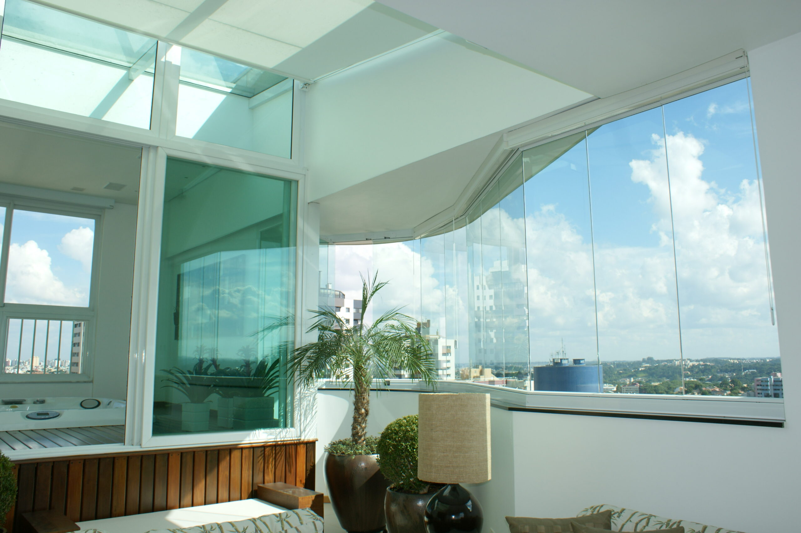
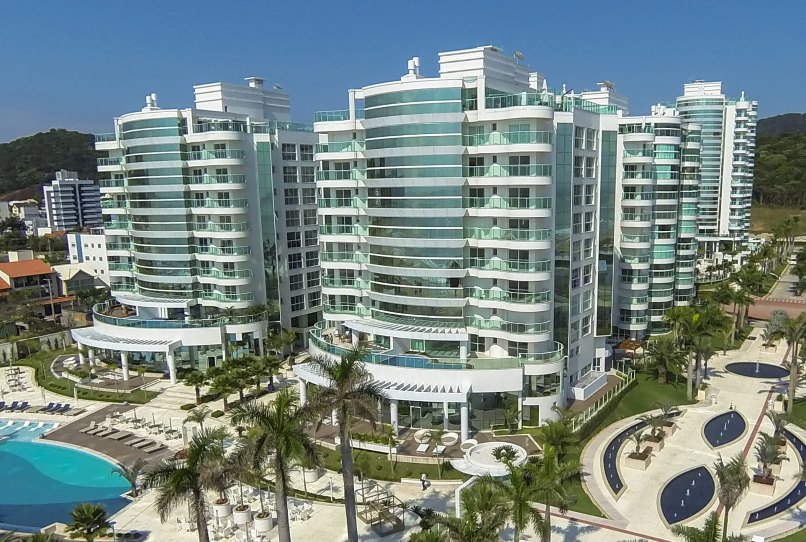
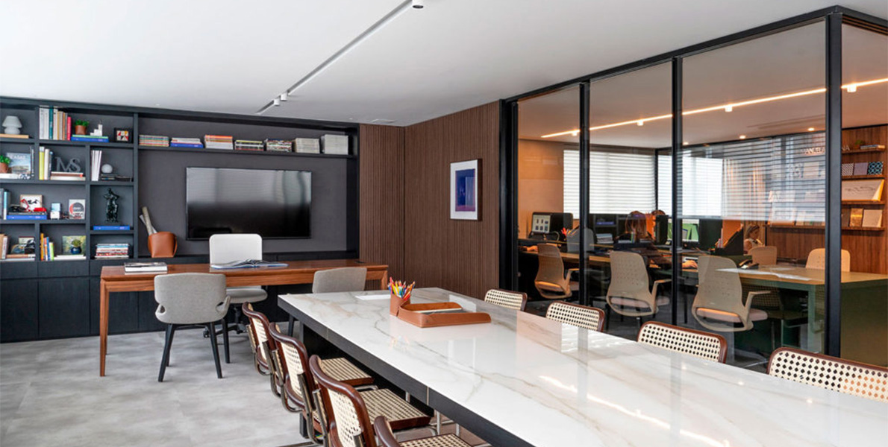
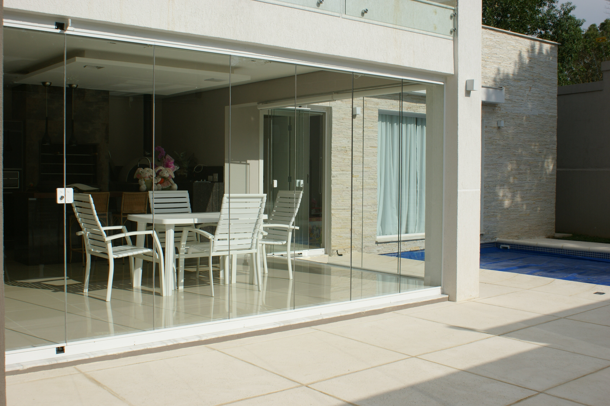

Confira registros fotográficos de obras entregues pela Vitra Max nos condomÃnios mais prestigiados de Balneário Camboriú, Itapema, Brava e região.




Envie sua planta ou medidas estimadas e receba a consultoria técnica da equipe Vitra Max sem compromisso.